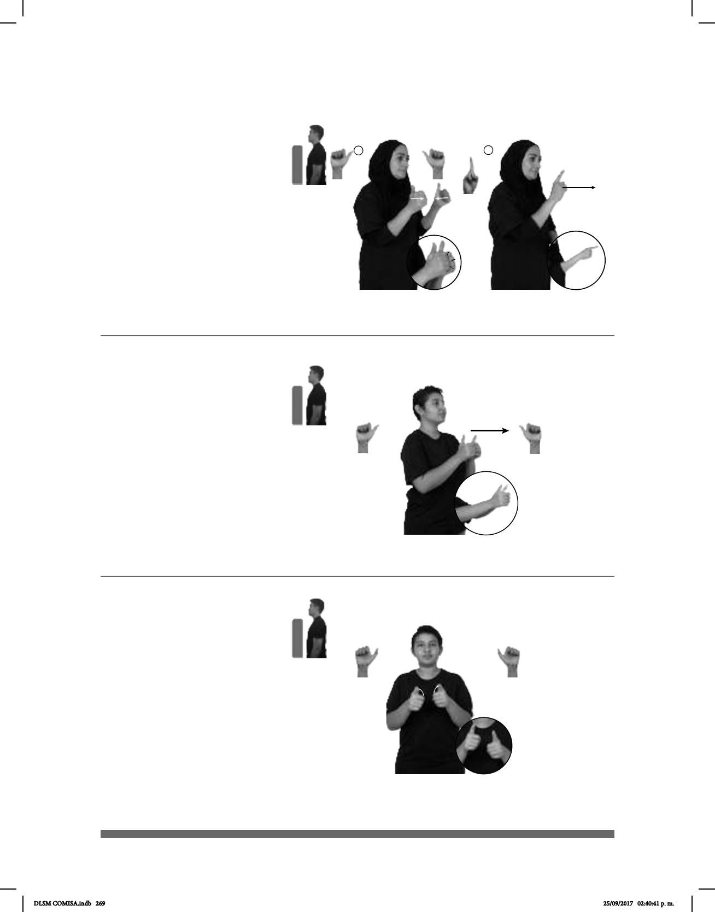

269
1
2
(A-109)
HOY PARQUE TODOS IR CONTIGO
Hoy todos iremos al parque contigo.
(A-110)
____________________neg
pro-YO VIAJAR CONTIGO
Yo no viajo contigo.
Joystick (A-111)
SEMANA PASADA pos-TUYO CONTROL-DE-VIDEOJUEGO DESCOMPO-
NERSE
Tu control de videojuego se descompuso la semana pasada.
Seña: SC: I. SS; II. SM
I. A.1; II. 1.2
I. Las palmas se
encuentran frente a frente; II. Palma
hacia la derecha.
I. y II. A la altura del
pecho.
I. Las manos se
encuentran y se tocan frente a
frente; II. Recto hacia el frente.
pron. Con la
persona a la que se dirige quien
habla o escribe.
Seña: SS
A.1
Las palmas se
encuentran frente a frente.
A la altura del pecho.
Recto hacia el frente.
pron. Con la
persona a la que se dirige quien
habla o escribe.
Seña: SB
MD y MB A.6
MD palma hacia la
derecha. MB palma hacia la izquierda.
A la altura del pecho.
Los dedos pulgares se
retraen alternadamente.
Simula la acción de
presionar los botones de un control.
sust. m. Dispositivo que
regula a distancia el funcionamiento de
un videojuego.
DLSM COMISA.indb 269 25/09/2017 02:40:41 p. m.